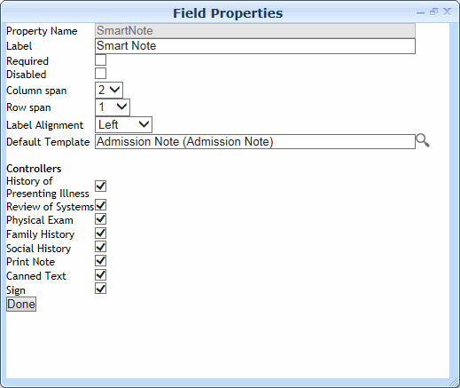

We recommend that you watch the Smart Note training video on the Cority User Community and experiment with the templates provided before attempting to create your own templates. Many clients will find that they do not need to create their own templates.
Creating a Smart Note Template
Cority provides SOAP and Admission Note templates for use in the Smart Note field. You can edit these, use them as the basis for creating a new template, or create new templates from scratch. We recommend that you use the Admission Note template as the basis for new templates because it contains all the html <div> statements required to link to the controllers in the Smart Note field in the clinic visit record; however, a Tags menu provides an easy way to add these div statements to other templates.
If you are using an AddNote layout other than the default layout, ensure that it includes a Smart Note Templatefield. For more information, see Defining Form Layouts.
The font style and size for the section headings on the Smart Note templates can be configured using the “Default Font for Letters” and “Default Font Size for Letters” system settings.
To use the Admission Note template as the basis for a new template:
In the AddNote look-up table, open the Admission Note template.
Select everything in the note body and copy it to the clipboard, then click Newto create a new note template.
In the Code field, enter the name of the new template, and select Clinic Visit as the Category. Select the Geographic Locationand Health Center.
Paste the note contents into the body and click Save.
Change the headings as required, but do not delete any yet so that you do not delete hidden <div> tags.
Click at the top of the Smart Note Template field to open the formatting toolbar and click Sourceto view the html.
The <div> tags are used to connect a section to a controller, so that content created via that controller is placed in the correct location. If a controller does not have a corresponding <div> connection in the template, any content created via that controller will be placed at the cursor location.
Locate the appropriate <div> statement, cut it to the clipboard, then paste it below the desired section heading. For example:
The <div> statement that relates to the Print controller, on the other hand, must be placed above what you want to print, so that everything below it will be printed. In the SOAP and Admission Note templates, this line is above the Assessment & Plan section: <div id="Print_space" style="display: none;"> </div> If you want to print different content, cut this line and paste it above the section that you want to print. Note that everything below this line will be printed. If you want to limit what prints, move the desired section to the end of the note first, then place the <div> line above it.
While in the Source view, delete any unrequired sections (being careful not to delete any required <div> statements).
In the AddNote look-up table, click Newto create a new note template.
In theCodefield, enter the name of the new template, and select Clinic Visit as the Category.
In the Smart Note Templatefield, enter the desired section headings and any other text for your note.
Click at the top of the Smart Note Template field to open the formatting toolbar, and apply any formatting as required.
To connect the controllers in the Smart Note field of the clinic visit record to a section of your template, click in the heading you want to link, then choose the controller name from the Tags list. You will not see a change to your note content, but if you view the Source (HTML) you will see the new <div> statement. For more information, see step 7 above.
The <div> statement to identify content to be printed must be placed above the content - be sure to click before any content you want included before inserting the Print tag. Note that everything below this line will be printed.
If you want to verify the placement of the <div> statements, click Sourceto view the html.
Cority includes many questionnaires designed specifically for use with Smart Notes, but you may wish to edit these or create new questionnaires. These questionnaires are called when a user clicks one of the controllers in the Smart Note field in the clinic visit record.
To create a new questionnaire for use in a Smart Note:
Use the QuestionCategory look-up table to create the question categories (e.g. HPI Chest Pain, HPI Rash, FmHx Father, etc.).
Use the SingleQuestion look-up table to create the questions to be used in your Smart Note questionnaire (for example, for the HPI Chest Pain category, questions might be: Gradual, Sudden, Dull, Stabbing, etc.).
In the Questionnaire look-up table, create a new questionnaire or clone an existing Smart Note content questionnaire (e.g. HPI Cough, FmHx Mother, etc.), then add the appropriate questions.
In the questionnaire record, specify the Smart Note Templatetype. This is the Smart Note field controller that you want to link the questionnaire to. For example, if you want the questionnaire to be available for selection when a user clicks the HPI controller in the clinic visit record, select “History of Presenting Illness”.
Optionally, select the Hide Question Numberscheckbox to prevent the question numbers from appearing beside the questions.
To specify the order in which you want the questions to appear, open the Questionnaire Questions sublist and use the arrows to move questions to the desired order.
For each question/response combination that you want to be used as content in your Smart Note, ensure that the Print Answercheckbox (on the Questionnaire Question - Note Configuration sublist) is selected.
For “Text”, “Text Area”, “Date”, “Table or Query”, and “Formula” question types, the question/response will be placed in the Smart Note.
For “Instruction” questions, the question description provided in the Questionfield will be placed in the Smart Note.
For “Multiple Choice”, “Multiple Choice Checkbox”, “Checkbox”, “Normal or Abnormal”, and “Yes or No” question types, you can provide additional text to be displayed with each valid response. To do this, open the question on the SingleQuestion look-up table, open the appropriate record on the Valid Choices tab, and add the additional text to the Commentsfield. It is currently not possible to do this from the questionnaire itself.
If a number of “Checkbox” type questions have been configured to have a parent question that is of the “Instruction” type, those questions/responses will appear three to a row when added to a Smart Note.
Click Save.
Defining the Default Smart Note Template
You must configure the Smart Notefield for the layouts on which you will be using it.
Retrieve the form layout. If the Smart Note field has not been added to the layout, add it to the appropriate location (recommended at the bottom of the form).
Double-click on the Smart Note field to open its Field Properties.

Select the Default Template(e.g. SOAP, Admission, or a custom template) that will be presented in the Smart Note field whenever the form is opened.
Select the Controllersthat you want to be available.
 at the top of the Smart Note Template field to open the formatting toolbar, and apply any formatting as required.
at the top of the Smart Note Template field to open the formatting toolbar, and apply any formatting as required.